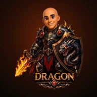

DRAGON GAMES MOSAICOO Eco do Amanhã
Na Torre de Continuidade, noventa e sete segundos de escuridão deixam quinze versões da mesma noite de chuva.


O ImpostorEntre os personagens, um é o impostor — e não é um de vocês. Leiam, desconfiem, apostem e deduzam. No fim, cada jogador aponta seu suspeito.O Impostor
Preparem-se para explorar objetos em Realidade Aumentada pelo celular. · Todos os jogos Dragon Games